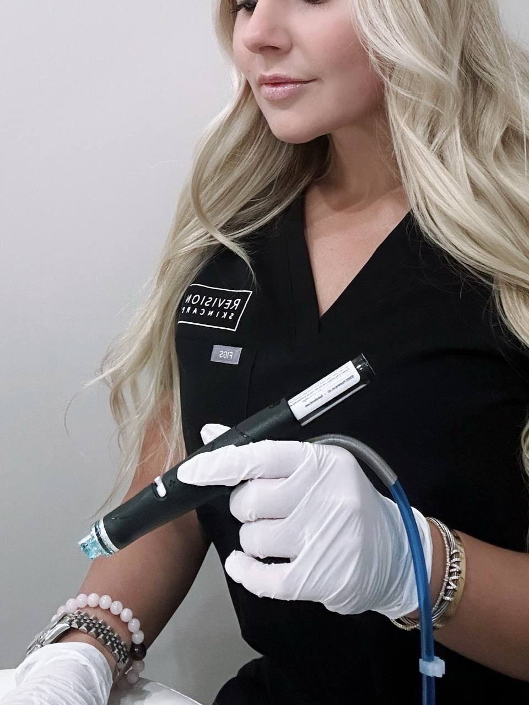
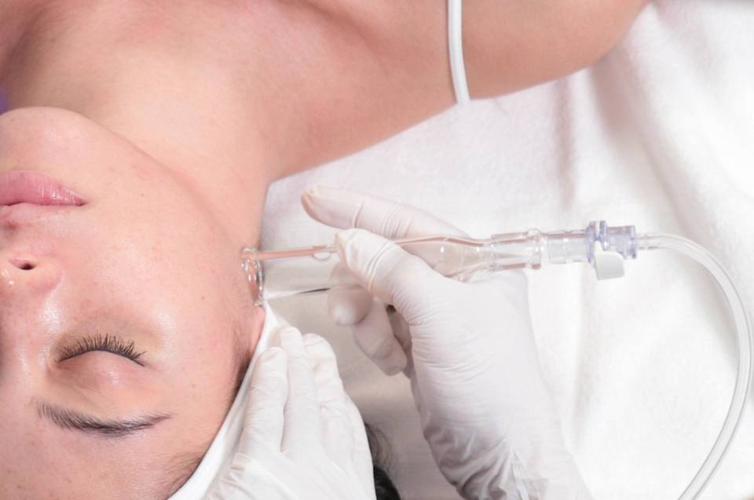
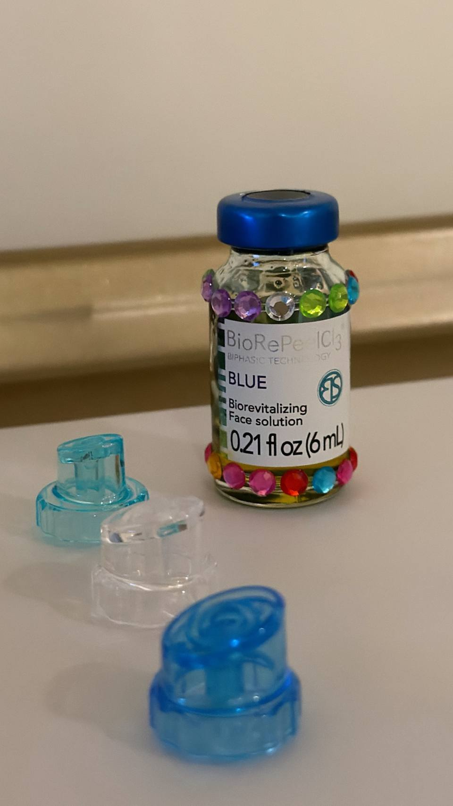
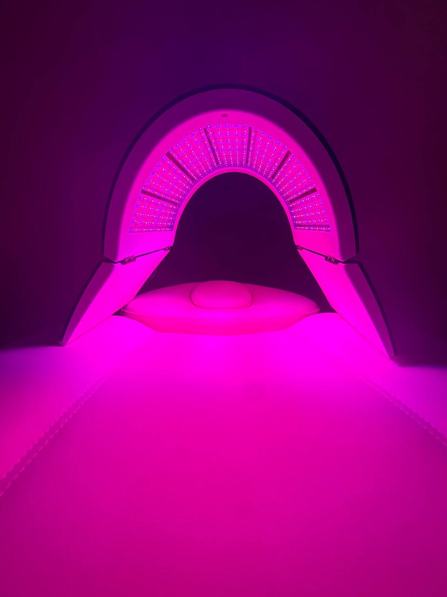
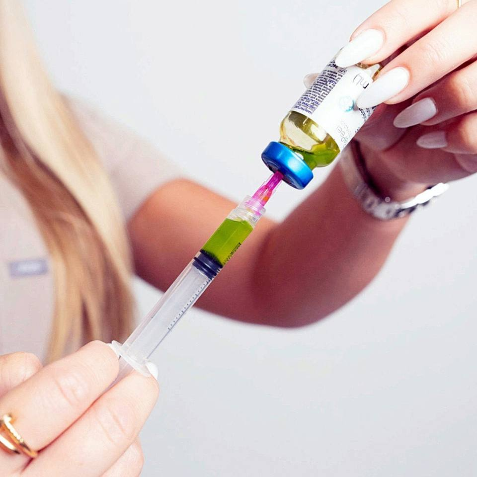
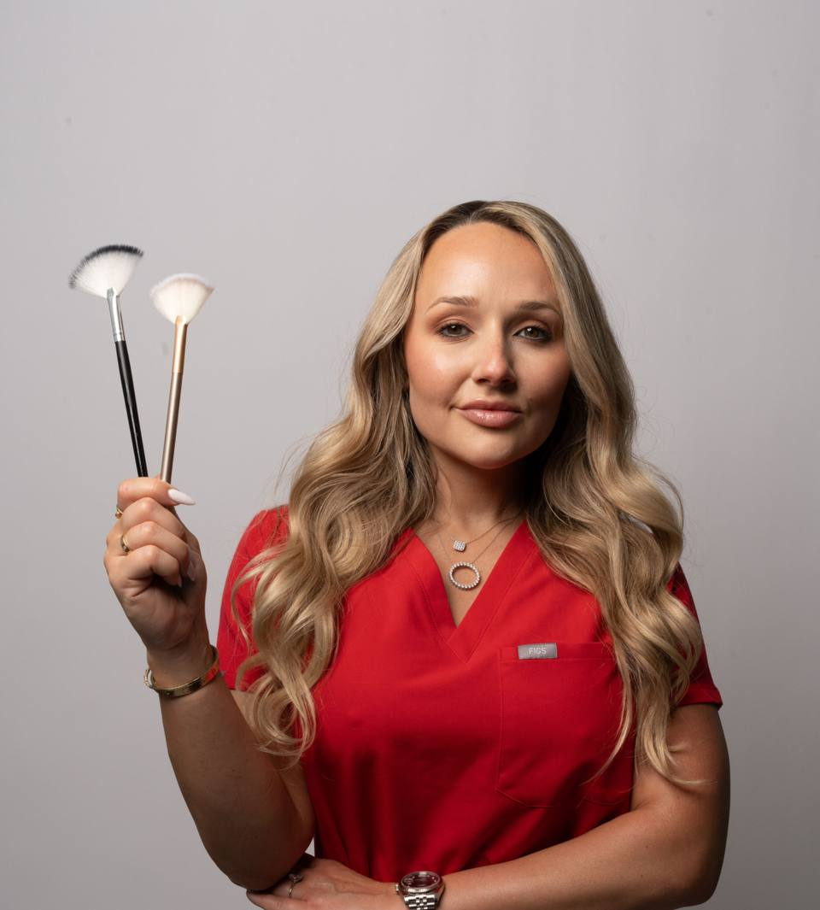

The ABK Journal
Skin, explained.
Plain-English guides from the ABK SKIN studio in Charlotte, so you can choose the right treatment, build a routine that works and walk into your appointment knowing what to ask.

Draft for review
How much is a facial in Charlotte? A clear price guide to every ABK SKIN treatment
How much a facial costs in Charlotte at ABK SKIN, from the $135 Basic B to microneedling, peels and memberships, and how to choose the right one for you.
Read the guideNew to ABK SKIN?
Start here.
Three quick reads before your first visit.
All guides
Browse by topic.
Treatments 10 guides
What each studio treatment does, who it suits, downtime and price.

Draft for review
The Platinum HydraFacial, the ABK way: every step explained
What happens in a Platinum HydraFacial at ABK SKIN in Charlotte, step by step, how it compares with the Express and Hydra-Peel, and how often to book.
Read the guide
Draft for review
Chemical peels in Charlotte: BioRePeel vs The Perfect Derma Peel
Compare chemical peels in Charlotte at ABK SKIN: BioRePeel, The Perfect Derma Peel and the Hydra-Peel. Downtime, results, price and aftercare.
Read the guide
Draft for review
Microneedling in Charlotte: what to expect, results and aftercare
What microneedling in Charlotte feels like, how many sessions you need, redness and downtime, aftercare and how standard and Enhanced Microneedling differ.
Read the guide
Draft for review
Dermaplaning facial in Charlotte: peach fuzz, smooth skin and what to expect
What a dermaplaning facial in Charlotte does, whether hair grows back thicker, who should skip it, aftercare and how ABK SKIN pairs it with LED and a mask.
Read the guide
Draft for review
Why acne needs a treatment plan, not just one facial
How an acne facial in Charlotte fits a real plan: in-studio options, a home routine that calms breakouts, timelines and when to see a dermatologist.
Read the guide
Draft for review
Hyperpigmentation and dark spots: treatments in Charlotte and a routine that works
How to fade the look of dark spots and hyperpigmentation in Charlotte: peels, brightening serums, daily SPF and a realistic timeline from ABK SKIN.
Read the guide
Draft for review
You don't need to take your wrinkles to the grave: treatments for fine lines and firmness
Treatments for fine lines, wrinkles and firmness in Charlotte: microneedling, PDRN, chemical peels and a home routine built on sunscreen and retinoids.
Read the guide
Draft for review
The “salmon sperm facial” explained: microneedling with PDRN and GHK-Cu
The salmon sperm facial in Charlotte, explained: PDRN and GHK-Cu, what ABK SKIN's PDRN microneedling includes, price, downtime and aftercare.
Read the guide
Draft for review
Facial or full-body lymphatic drainage: choosing the right booking
Facial or full-body lymphatic drainage in Charlotte? Compare the Lymphatic Drainage Facial, Sculpting Facial and Full Body Lymphatic Drainage.
Read the guide
Draft for review
Keratosis pilaris treatment in Charlotte: how to smooth bumpy arms
What keratosis pilaris (chicken skin) is, how ABK SKIN's arm HydraFacial treatment works in Charlotte, a KP home routine and how to keep arms smooth.
Read the guideSkincare & ingredients 8 guides
Ingredients and routines, and how to choose between the products we carry.
Draft for review
Be high maintenance with your skin: a guide to vitamin C serums
What vitamin C serum does, how to choose between C+ Correcting Complex, Hydri-C and Intellishade, and how to use it in your morning routine.
Read the guide
Draft for review
Retinol vs retinal: a beginner's guide to retinoids without the irritation
Retinol vs retinal explained: how retinoids work, Retinol Complete vs RetaXome, how to start without irritation, what not to mix and who should wait.
Read the guideDraft for review
The best tinted sunscreen for your skin: Intellishade Original vs Matte vs TruPhysical Clear
Compare Intellishade Original, Matte and TruPhysical Clear. Learn which tinted SPF moisturizer suits your skin, how much to apply and how to layer it.
Read the guide
Draft for review
Hyaluronic acid serum: how to use it, and Renewing vs Restorative HA
What hyaluronic acid serum does for dehydrated skin, how to apply it, and how Hydrinity's Renewing HA, Restorative HA and HA+ Masque differ.
Read the guide
Draft for review
Peptides, PDRN and GHK-Cu: a plain-English guide to the ingredients everyone is talking about
A plain-English guide to peptides, GHK-Cu copper peptide and PDRN in skincare: what they are, home products vs in-studio treatments, and how to use them.
Read the guide
Draft for review
Over-exfoliating? Why your skin may be freaking out, and how to reset it
Signs of over-exfoliated skin and a damaged barrier, the common mistakes, a simple reset routine and how to bring exfoliants back safely.
Read the guide
Draft for review
Are you cleansing long enough? How to wash your face, and why a treatment cleanser matters
How long to cleanse your face, step by step, how to choose a cleanser for your skin type, double cleansing and what a treatment cleanser like Prelude does.
Read the guideDraft for review
How to find the right skincare product size or formulation in the ABK shop
How to choose between Retinol Complete strengths, Intellishade finishes, clear or tinted lip care, Hydrinity HA serums, travel sizes and kits.
Read the guidePlanning your visit 5 guides
Prices, memberships and what to expect before you book.

Draft for review
Your first facial in Charlotte: what to expect, step by step
Booking your first facial in Charlotte? What happens at each step, which facial to choose, how to prepare, the cost and aftercare at ABK SKIN.
Read the guideDraft for review
Who ABK SKIN facials are perfect for (and how to know if we're your aesthetician)
Looking for a facial in Charlotte? Who ABK SKIN's customized, one-on-one facials suit, who they may not, and how to choose your first appointment.
Read the guide
Draft for review
What to ask at your first skincare consultation
Get the most from a skincare consultation in Charlotte: what to bring, the questions to ask about your skin, treatments and products, and what comes next.
Read the guide
Draft for review
ABK GLOW CLUB vs ABK SKIN CLUB: how a monthly facial membership works
Compare ABK SKIN's monthly facial memberships in Charlotte: ABK GLOW CLUB at $149 and ABK SKIN CLUB at $199, with treatments and product discounts.
Read the guide
Draft for review
Booking a facial before an event: timing from the ABK menu
When to book a facial before a wedding, photos or a big night in Charlotte: timing for HydraFacials, the Hydra-Peel, peels and microneedling.
Read the guide


No guides match that search yet.
Try a treatment or ingredient name, or book a consultation and ask us directly.
Still have questions?
Your skin is personal. So is your plan.
A guide can point you in the right direction. A one-on-one consultation looks at your skin, your products and your goals, and gives you a plan built for you.
Watch
Inside the studio
-
Nine days after a stand-alone BioRePeel
View on Facebook (opens in a new tab) -
POV: an athlete gets his first HydraFacial
View on Facebook (opens in a new tab) -
Katrina's skin update after her microneedling treatment stack
View on Facebook (opens in a new tab) -
A new protocol from the BioSkin masterclass
View on Facebook (opens in a new tab) -
NEXGen PDRN+: why peptides matter
View on Instagram (opens in a new tab) -
PDRN + GHK-Cu, explained
View on Instagram (opens in a new tab) -
Things worth your money, from a licensed aesthetician
View on Facebook (opens in a new tab) -
Cleanse for a full minute with Prelude
View on Instagram (opens in a new tab)
Ready to treat your skin intentionally?
Book a one-on-one appointment in Charlotte, or shop the skincare Katrina recommends.